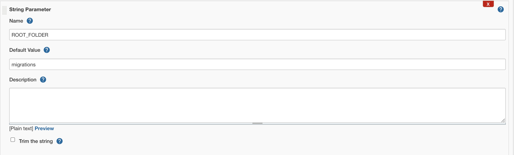

This guide will provide step-by-step instructions for how to build a simple CI/CD pipeline for Snowflake with Jenkins. My hope is that this will provide you with enough details to get you started on your DevOps journey with Snowflake and Jenkins.
DevOps is concerned with automating the development, release and maintenance of software applications. As such, DevOps is very broad and covers the entire Software Development Life Cycle (SDLC). The landscape of software tools used to manage the entire SDLC is complex since there are many different required capabilities/tools, including:
- Requirements management
- Project management (Waterfall, Agile/Scrum)
- Source code management (Version Control)
- Build management (CI/CD)
- Test management (CI/CD)
- Release management (CI/CD)
This guide will focus primarily on automated release management for Snowflake by leveraging the open-source Jenkins tool. Additionally, in order to manage the database objects/changes in Snowflake I will use the schemachange Database Change Management (DCM) tool.
Let's begin with a brief overview of GitHub and Jenkins.
Prerequisites
This guide assumes that you have a basic working knowledge of Git repositories.
What You'll Learn
- A brief overview of Jenkins
- A brief idea and overview of schemachange
- How does schemachange help in database change management
- How does Jenkins help to create a pipeline for schemachange
- How do we incorporate containers to easily run Jenkins and schemachange
- How do we have Jenkins serve as a "front-end" for on-demand requests
What You'll Need
You will need the following things before beginning:
- Snowflake
- A Snowflake Account.
- A Snowflake Database named DEMO_DB.
- A Snowflake User created with appropriate permissions. This user will need permission to create objects in the DEMO_DB database.
- GitHub
- A GitHub Account. If you don't already have a GitHub account you can create one for free. Visit the Join GitHub page to get started.
- A GitHub Repository. If you don't already have a repository created, or would like to create a new one, then Create a new respository. For the type, select
Public(although you could use either). And you can skip adding the README, .gitignore and license for now. - Integrated Development Environment (IDE)
- Your favorite IDE with Git integration. If you don't already have a favorite IDE that integrates with Git I would recommend the great, free, open-source Visual Studio Code.
- Your project repository cloned to your computer. For connection details about your Git repository, open the Repository and copy the
HTTPSlink provided near the top of the page. If you have at least one file in your repository then click on the greenCodeicon near the top of the page and copy theHTTPSlink. Use that link in VS Code or your favorite IDE to clone the repo to your computer. - Docker
- Docker Desktop on your laptop. We will be running Jenkins as a container. Please install Docker Desktop on your desired OS by following the Docker setup instructions.
What You'll Build
- A simple, working Jenkins pipeline service for Snowflake

Jenkins
"Jenkins is a self-contained, open source automation server which can be used to automate all sorts of tasks related to building, testing, and delivering or deploying software" (from Jenkins' Documentation).
Unlike other complete SDLC tools, Jenkins does not include built-in support for version control repositories or project management. Instead Jenkins is focused on CI/CD pipelines. In Jenkins terminology a CI/CD pipeline is referred to as a "Pipeline".
A Jenkins Pipeline "orchestrates long-running activities that can span multiple build agents. Suitable for building pipelines (formerly known as workflows) and/or organizing complex activities that do not easily fit in free-style job type" (from the "New item" page in Jenkins).

Database Change Management (DCM) refers to a set of processes and tools which are used to manage the objects within a database. It's beyond the scope of this guide to provide details around the challenges with and approaches to automating the management of your database objects. If you're interested in more details, please see my blog post Embracing Agile Software Delivery and DevOps with Snowflake.
schemachange is a lightweight Python-based tool to manage all your Snowflake objects. It follows an imperative-style approach to database change management (DCM) and was inspired by the Flyway database migration tool. When schemachange is combined with a version control tool and a CI/CD tool, database changes can be approved and deployed through a pipeline using modern software delivery practices.
For more information about schemachange please see the schemachange project page.
Open up your cloned repository in your favorite IDE and create a folder named migrations. In that new folder create a script named V1.1.1__initial_objects.sql (make sure there are two underscores after the version number) with the following contents:
CREATE SCHEMA DEMO;
CREATE TABLE HELLO_WORLD
(
FIRST_NAME VARCHAR
,LAST_NAME VARCHAR
);
Then commit the new script and push the changes to your GitHub repository. Assuming you started from an empty repository, your repository should look like this:

Building and Running a Docker Image
In order to deploy Jenkins we're going to create a Docker custom Docker image and then run it locally. So first, create a Docker file named Dockerfile in the root of your GitHub repository with the following contents and commit it to your repo:
FROM jenkins/jenkins:lts
# Install required applications
USER root
RUN apt-get update
RUN apt-get install -y docker.io
# Drop back to the regular jenkins user
USER jenkins
Next, to create the custom Docker image run the following command from a shell:
docker build -t jenkins .
After the Docker image has been created we can then create and run a container based on that image. This will start up a Jenkins container locally:
docker run -p 8080:8080 \
-v /var/run/docker.sock:/var/run/docker.sock \
--name jenkins \
jenkins
The last thing we need to do, once the Jenkins container is running, is to give Jenkins access to the Docker engine by running this command:
docker exec -it -u root jenkins bash -c 'chmod 666 /var/run/docker.sock'
Configuring Jenkins
To access the Jenkins UI, open localhost:8080 in a new tab in your web browser of choice. The first getting started screen titled "Unlock Jenkins" will ask you to enter the admin passowrd. This is password mentioned above that you copied and saved. Enter the password and click Next.
Next you will see the "Customize Jenkins" set up screen. Click on the Install suggested plugins button as shown below and wait for all the suggested plugins to be installed.

After all the plugins have been installed you will be taken to the "Create First Admin User" page. Enter admin for the "Username" (and "Full name"), enter a password which will be used the Jenkins admin user, and enter a valid email address. Confirm that your screen looks like the image below (with the exception that you entered an email address) and then click on the Save and Continue button.

On the final getting started set up screen, leave the "Instance Configuration" Jenkins URL as http://localhost:8080. Then click on the Save and Finish button and then on the Start using Jenkins button.
You should now be at the main Jenkins Dashobard page and ready to start using Jenkins. If you find yourself at a login page (like below) then enter the admin user credentials and click Sign in.

That last thing we need to do in order to set up Jenkins for this guide is to install the Docker Pipeline plugin in Jenkins. This plugin allows Jenkins Pipeline Projects to build and test using Docker images.
Click on Manage Jenkins in the left navigation bar and then on the Manage Plugins under "System Configuration".

From the Plugin Manager click on the "Available" tab and enter docker pipeline in the search box. You should see one result called "Docker Pipeline". Check the box under this "Install" column next to this plugin and then click on the Install without restart button:

On the next results page you should see a bunch of green checkmarks each with a "Success" status. Click on the Go back to the top page link to return to the main Jenkins Dashboard page. And with that Jenkins is set up and ready to use!
Creating the Jenkinsfile
In this step we will create our first Jenkins Pipeline. A Jenkins Pipeline "orchestrates long-running activities that can span multiple build agents. Suitable for building pipelines (formerly known as workflows) and/or organizing complex activities that do not easily fit in free-style job type" (from the "New item" page in Jenkins).
Jenkins Pipelines are best defined through a proprietary file format known as a Jenkinsfile. A Jenkinsfile is a text file that contains the definition of a Jenkins Pipeline and is checked into source control.
So with that, let's create our first Jenkins Pipeline. To do so we will simply create a Jenkinsfile and commit it to our repository. Toggle back to you IDE and create a Jenkinsfile named Jenkinsfile in the root of your GitHub repository with the following contents and commit it to your repo:
pipeline {
agent {
docker {
image "python:3.8"
args '--user 0:0'
}
}
stages {
stage('Run schemachange') {
steps {
sh "pip install schemachange --upgrade"
sh "schemachange -f migrations -a ${SF_ACCOUNT} -u ${SF_USERNAME} -r ${SF_ROLE} -w ${SF_WAREHOUSE} -d ${SF_DATABASE} -c ${SF_DATABASE}.SCHEMACHANGE.CHANGE_HISTORY --create-change-history-table"
}
}
}
}
After commiting your Jenkinsfile, your repo should look like this:

Before we move on, copy your (HTTPS) repository url and save it for later. You can find it under the green Code button as indicated in the image below:

Creating the Jenkins Pipeline
Now that we've created the pipeline definition in our Jenkinsfile and have it committed to our repo we're ready to create the actual Pipeline in Jenkins (which will be based off our Jenkinsfile). From the main Jenkins Dashboard page click on New Item in the left navigation bar. For the item name enter snowflake-devops-demo and click on the Pipeline item type to select it. Once you've done that, click on the blue OK button as shown here:

You now have a new Job created in Jenkins. The first thing we need to do is tell the newly created Job where the Jenkinsfile definition is at. You should still be on the job configuration page. Click on the Pipeline tab (or scroll down to the "Pipeline" section manually) and change the "Definition" to Pipeline script from SCM. Under the SCM section, select Git and then paste the GitHub repository url that you saved above into the Repository URL field. Click on the Advanced button (which will reveal some additional parameters) and then enter these values for the below parameters:
- Name:
origin - Refspec:
+refs/pull/*:refs/remotes/origin/pr/* - Branches to build: leave blank
- Repository browser:
(Auto) - Additional Behaviours:
Wipe out repository & force clone - Script Path:
Jenkinsfile - Uncheck "Lightweight checkout"
Make sure you don't miss step #5, you have to click on the "Add" button under "Additional Behaviours" and then select "Wipe out repository & force clone". This is an important step as it ensures that your Jenkins pipeline will always be working with the latest version of your repository.
If all is good, it should look like this screenshot:

Click on the blue Save button to save these changes.
Adding Pipeline Parameters
Pipeline parameters allow Jenkins to securely store values/variables which will be used in your CI/CD pipelines. In addition to creating variables that you can access in your Jenkins Pipeline, Jenkins will also automatically create OS-level environment variables for each parameter. In this step we will create parameters for each of the arguments used by schemachange.
If you don't still have it open, open up your snowflake-devops-demo job and click on Configure in the left navigation bar. Under the "General" settings click the This project is parameterised option. For each parameter listed below click on the Add Parameter button and enter the name given below along with the appropriate value. The parameter entry screen (for each parameter) will look like this:

And here are the values to use for each parameter (please adjust as appropriate):
Parameter type | Parameter name | Parameter value |
String Parameter | SF_ACCOUNT | xy12345.east-us-2.azure |
String Parameter | SF_USERNAME | DEMO_USER |
Password Parameter | SNOWFLAKE_PASSWORD | ***** |
String Parameter | SF_ROLE | DEMO_ROLE |
String Parameter | SF_WAREHOUSE | DEMO_WH |
String Parameter | SF_DATABASE | DEMO_DB |
Please note the slight difference in naming convention with the password parameter (it starts with "SNOWFLAKE_" instead of "SF_" like the others), that is intentional. schemachange expects to find the password in an OS-level environment variable named SNOWFLAKE_PASSWORD.
When you're finished don't forget to click on the blue Save button to save these changes.
In this step we will manually run the new Jenkins Pipeline for the first time. This will deploy the first database migration script we created in step 4.
From the Job overview page, click on the Build with Parameters option in the left naviagation bar, as seen in the image below:

Verify that all the parameter values look correct and click on the blue Build button to start the Pipeline. If all goes well, you should see a successful output that indicates the build was successful:

To view the log output from the execution you can either hover over the stage shown in the screenshot above and click on the Logs icon. Or for more details on the build you can open the specific build number and then click on the Console Output in the left navigation bar.
Now that your first database migration has been deployed to Snowflake, log into your Snowflake account and confirm.
Database Objects
You should now see a few new objects in your DEMO_DB database:
- A new schema
DEMOand tableHELLO_WORLD(created by the first migration script from step 4) - A new schema
SCHEMACHANGEand tableCHAGE_HISTORY(created by schemachange to track deployed changes)
Take a look at the contents of the CHANGE_HISTORY table to see where/how schemachange keeps track of state. See the schemachange README for more details.
Query History
From your Snowflake account click on the History tab at the top of the window. From there review the queries that were executed by schemachange. In particular, look at the Query Tag column to see which queries were issued by schemachange. It even tracks which migration script was responsible for which queries.
In this script you will create your second database migration and have the Jenkins Pipeline deploy it to your Snowflake account!
Open up your cloned repository in your favorite IDE and create a script named V1.1.2__updated_objects.sql (make sure there are two underscores after the version number) in the same migrations folder with the following contents:
USE SCHEMA DEMO;
ALTER TABLE HELLO_WORLD ADD COLUMN AGE NUMBER;
Then commit the new script and push the changes to your GitHub repository. Your migrations folder should look like this as shown below.

Because we haven't enabled any continuous integration triggers for our Pipeline we need to manually run the Pipeline for now. In Jenkins go back to the Pipeline overview page and click on the Build with Parameters option in the left navigation bar. Verify that all the parameter values look correct and click on the blue Build button to start the Pipeline.
To view the log output from the execution you can either hover over the stage shown in the screenshot above and click on the Logs icon. Or for more details on the build you can open the specific build number and then click on the Console Output in the left navigation bar.
You can also confirm that the changes have been deployed to your Snowflake account by following the general instructions in Step 8 again (except this time you're looking for a new column in the HELLO_WORLD table).
So now that you've got your first Snowflake CI/CD pipeline set up with Jenkins, what's next? The software development life cycle, including CI/CD pipelines, gets much more complicated in the real-world. Best practices include pushing changes through a series of environments, adopting a branching strategy, and incorporating a comprehensive testing strategy, to name a few.
Pipeline Stages
In the real-world you will have multiple stages in your build and release pipelines. A simple, helpful way to think about stages in a deployment pipeline is to think about them as environments, such as dev, test, and prod. With Jenkins, you can create different pipelines for the corresponding branches as referenced in Jenkins Branches and Pull Requests.
Branching Strategy
Branching strategies can be complex, but there are a few popular ones out there that can help get you started. To begin with I would recommend keeping it simple with GitHub flow (and see also an explanation of GitHub flow by Scott Chacon in 2011). Another simple framework to consider is GitLab flow.
Testing Strategy
Testing is an important part of any software development process, and is absolutely critical when it comes to automated software delivery. But testing for databases and data pipelines is complicated and there are many approaches, frameworks, and tools out there. In my opinion, the simplest way to get started testing data pipelines is with dbt and the dbt Test features. Another popular Python-based testing tool to consider is Great Expectations.
With that you should now have a working CI/CD pipeline in Jenkins and some helpful ideas for next steps on your DevOps journey with Snowflake. Good luck!
What We've Covered
- A brief history and overview of Jenkins
- A brief history and overview of schemachange
- How database change management tools like schemachange work
- How a simple release pipeline works
- How to create CI/CD pipelines in Jenkins
- Ideas for more advanced CI/CD pipelines with stages
- How to get started with branching strategies
- How to get started with testing strategies